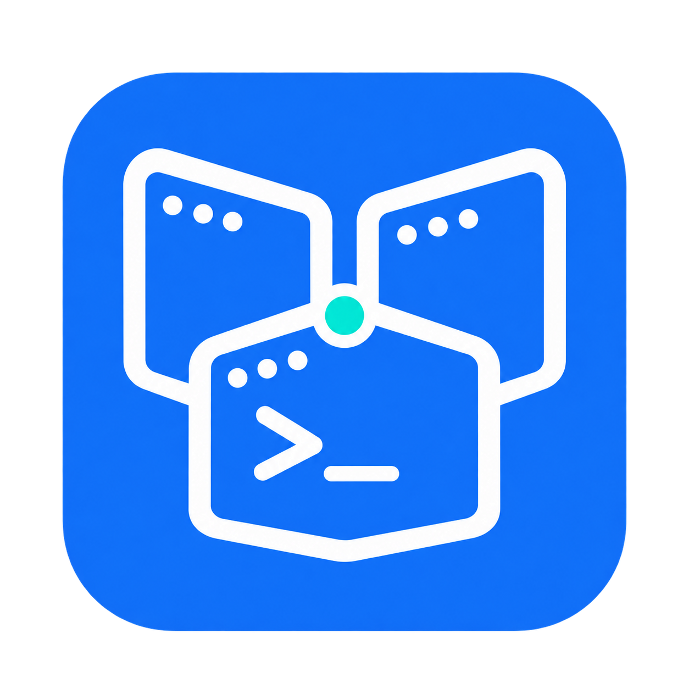
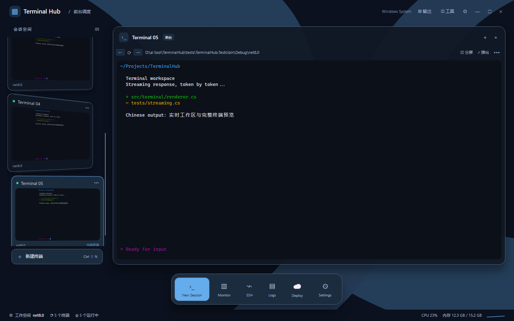
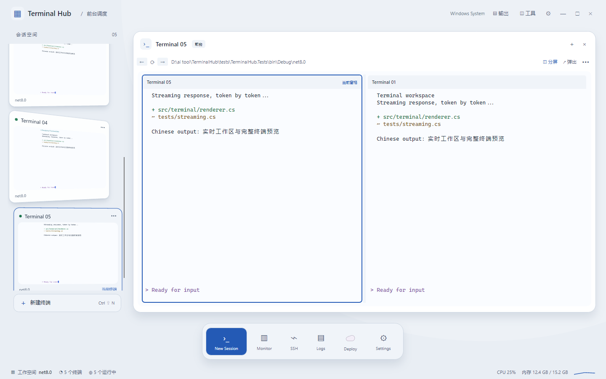
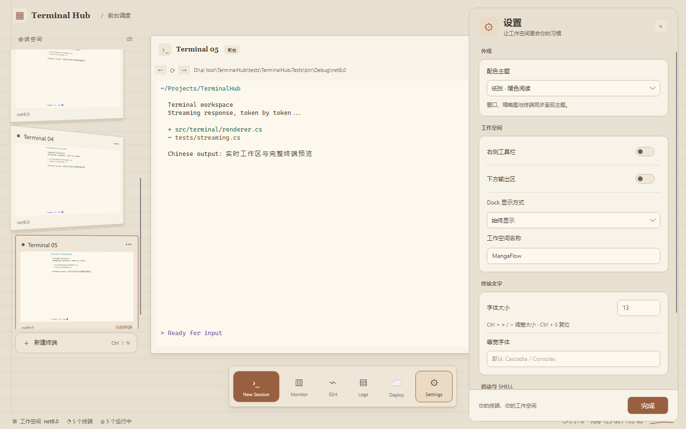

Terminal Hub
多个终端，一个工作空间。
Terminal Hub 是一款 Windows 优先、支持 Linux 的原生多会话终端，面向同时使用多个项目、开发服务和命令行工具的开发者。实时缩略图帮助你找到会话，分屏让两个任务并排工作，文件、日志和进程工具随时可以展开。

本页界面图由当前源码通过 Avalonia Headless + Skia 渲染，使用 Mock PTY 与示例终端输出。素材来源与更新方式
让每个会话都有位置
开发服务正在运行，另一边需要查看日志，还要留一个 Shell 执行临时命令。Terminal Hub 把这些会话放在同一工作空间里，让你切换之前就能看到它们的内容。
| 日常操作 | Terminal Hub 的处理方式 |
|---|---|
| 找到正在运行的任务 | 左侧缩略图展示实时终端内容；点击切换，拖动调整顺序 |
| 同时操作两个会话 | 左右分屏，各自显示名称；点击窗格立即切换输入焦点 |
| 临时放大一个任务 | 从缩略图展开到主区域，或将会话弹出为独立窗口 |
| 查看命令背后的信息 | 按需展开文件、日志、进程、SSH 和输出面板 |
| 调整自己的工作环境 | 四种主题、等宽字体与字号设置，以及三种 Dock 显示模式 |
| 回到熟悉的布局 | 保存会话顺序、名称、目录、Shell、分屏与活动会话 |
工作区恢复会重新启动 Shell 进程；上次运行的程序及其进度不会随布局一起恢复。
界面与操作
会话在左，工作在前
缩略图拖动时跟随指针，相邻卡片平滑让位，松手后落入新位置。切换会话采用受 macOS Dock 启发的展开过渡；缩略图仅预览内容，动画不会为了自身尺寸调整终端的 PTY 网格。
点击工具栏的 「分屏」，把两个会话并排放置。先点击要操作的窗格，再点左侧缩略图，可为该窗格换一个会话。左右窗格切换时主区域保持静止，侧栏更新活动状态。

四种主题，一套工作习惯
深蓝玻璃、深黑、亮白、纸张覆盖主窗口、终端、缩略图、菜单和设置。未展开的卡片使用各自的主题细节：玻璃高光、深黑细描边、亮白柔和阴影和纸张叠页。
设置采用分组布局，可调整主题、工具栏、输出区、Dock、字体与新终端使用的 Shell。Dock 默认靠近底部时显示，也可改为始终显示或隐藏。

查看深黑主题
保留终端里的操作习惯
鼠标拖选后使用 Ctrl+Shift+C 复制，Ctrl+C 保留给运行中的程序。支持中文输入法定位、历史滚动、文本搜索和多行粘贴。应用启用终端鼠标协议时，按住 Shift 可使用终端自身的选择与滚动。
Claude Code、Codex CLI 等工具可在 Shell 内单独安装和运行。具体键盘协议、鼠标行为及已经验证的范围，见 CLI 交互适配。
快速开始
Windows
需要 Windows 10 1809 或更高版本 / Windows 11、Git 和 .NET 8 SDK。默认启动 Shell 为 PowerShell 7，请确保 pwsh 在 PATH 中。
git clone https://github.com/coffe01-10/TerminalHub.git
cd TerminalHub
dotnet restore TerminalHub.sln
dotnet run --project src/TerminalHub.App
没有安装 pwsh 时，可打开设置，把「新终端使用」改为 cmd.exe，再点击「新建终端」。WSL、自定义 Shell 和 SSH 连接需要相应程序已在本机安装。
Linux
需要 .NET 8 SDK、Git、可用的 X11 显示环境及字体依赖。Debian / Ubuntu 上的界面依赖可以用以下命令安装：
sudo apt-get install libx11-6 libxcb1 libfontconfig1 libice6 libsm6 fonts-noto-cjk
git clone https://github.com/coffe01-10/TerminalHub.git
cd TerminalHub
bash scripts/run-linux.sh
默认会话同样使用 pwsh；若只安装了 Bash，打开设置选择 bash，再新建终端。无实体显示器时，安装 Xvfb 后可运行 bash scripts/run-linux.sh --headless。
第一次使用
- 点击一个终端，在提示符后执行
echo Hello Terminal Hub，应在当前终端及其缩略图中看到输出。 - 使用
Ctrl+Shift+N新建会话，点击缩略图切换；原会话中的进程继续运行。 - 点击「分屏」，尝试在两侧分别输入；通过窗格名称与高亮边框确认当前会话。
应用采用单实例运行。重新编译后，请先正常退出旧实例，再启动新版本。
常用快捷键
| 操作 | 快捷键 |
|---|---|
| 新建 / 关闭当前会话 | Ctrl+Shift+N / Ctrl+Shift+W |
| 下一个 / 上一个会话 | Ctrl+Tab / Ctrl+Shift+Tab |
| 显示或隐藏工具栏 / 输出区 | Ctrl+Shift+B / Ctrl+Shift+J |
| 复制选中文字 | Ctrl+Shift+C |
| 粘贴 | Ctrl+V、Ctrl+Shift+V 或 Shift+Insert |
| 放大 / 缩小 / 重置字号 | Ctrl+= / Ctrl+- / Ctrl+0 |
| 重命名会话 | 会话列表聚焦时按 F2，或双击会话标题 |
终端聚焦时，F2 交给终端内的程序。关闭会话会结束其进程。
配置保存在哪里？
| 平台 | 默认配置文件 | | --- | --- | | Windows | `%APPDATA%\TerminalHub\settings.json` | | Linux | `${XDG_CONFIG_HOME:-~/.config}/terminalhub/settings.json` | 设置和工作区布局保存在本机。界面中修改 Shell 会影响之后新建的终端；已有会话继续使用原来的进程。开发与打包
项目采用 Avalonia 11 + .NET 8。Windows 使用 ConPTY，Linux 使用 forkpty；终端解析、屏幕缓冲和会话管理位于独立的 Core 项目。
src/
├── TerminalHub.App 原生界面、终端绘制、输入法与工作区
├── TerminalHub.Core VT 解析、屏幕缓冲、会话与设置
└── TerminalHub.Pty Windows ConPTY、Linux PTY、Mock PTY
tests/
└── TerminalHub.Tests 核心逻辑、原生布局与交互回归
dotnet build TerminalHub.sln -c Debug
dotnet test tests/TerminalHub.Tests/TerminalHub.Tests.csproj
生成可分发版本
Windows x64 发布脚本需要 PowerShell 7。先生成包含 .NET 运行时的应用：pwsh -File scripts/publish-windows.ps1 -SkipInstaller
bash scripts/publish-linux.sh
文档与贡献
- 开发指引：代码入口、已知问题背景与验证方式。
- CLI 交互适配：粘贴、鼠标、快捷键和兼容性验证范围。
- Linux 调试记录：X11、Xvfb 与本机调试；历史界面描述以当前源码为准。
- 产品说明：设计背景与需求记录。
欢迎通过 Issues 提交问题或改进建议。终端显示与输入问题请附上系统、Shell / CLI 版本、复现步骤和截图；贡献代码时请为修复的具体行为补充或运行相关回归。
当前开发重点包括 Unicode 字素与格宽、光标与输入法定位，以及多会话性能。macOS 尚不作为已验证平台列出。
许可证
MIT · Copyright © 2026 Jinhong Chen (coffe01-10)